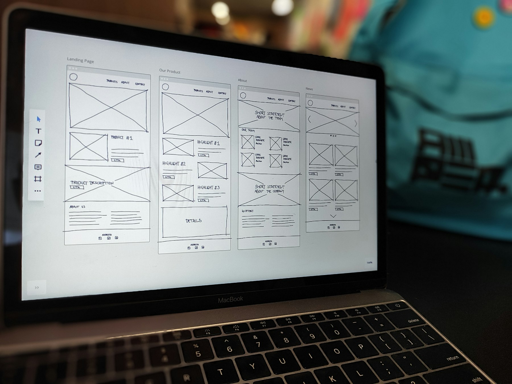
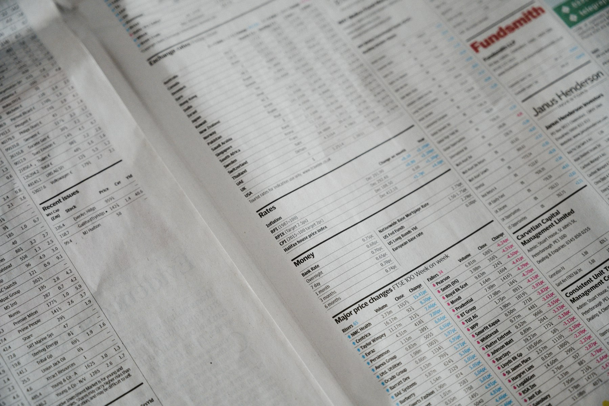

TL;DR
Finding the right invoicing software is crucial for freelancers to ensure timely payments and efficient workflows.
Focus on features that suit your needs and integrate with other tools to enhance productivity.
Understanding Your Invoicing Needs
Before diving into software options, clarify your invoicing requirements.
Consider factors like the types of services you offer, client preferences, and your proficiency with technology.
Make a list of necessary features: Do you need recurring bills, time tracking, or multi-currency support?
Understanding these specifics will guide you in selecting the best invoicing tool that fits your freelance business.

Key Features to Look For
Focus on essential invoicing features that enhance your workflow.
Look for software that allows customization of invoice templates, integration with payment gateways, and automated reminders.
User-friendliness is crucial too.
Opt for platforms that are easy to navigate, allowing you to create and send invoices quickly without a steep learning curve.
Top Invoicing Tools for Freelancers
Research and shortlist several invoicing tools such as FreshBooks, Wave, and QuickBooks.
Analyze their strengths and weaknesses.
For instance, FreshBooks offers excellent time tracking, while Wave is free and sufficient for basic invoicing needs.
Create a comparison chart to visualize features, pricing, and usability before making a decision.
Setting Up Your Invoicing System
Once you've chosen your invoicing software, it's time to set it up.
Input your company details, set payment terms, and create your first invoice template.
Don’t forget to include branding elements like your logo and colors.
Automate reminders for payments to help clients remember their dues.
This not only saves you follow-up time but also aids in maintaining a professional image.
Integrating Software with Other Tools
Enhance your productivity by integrating your invoicing software with other tools you already use.
For example, sync it with your project management tool to track time and invoicing seamlessly.
Consider using tools like Zapier to automate workflows between different applications.
This strategy will help minimize data entry and reduce errors, enabling you to focus on your core work.

Monitoring Your Finances
Keep track of your income and expenses after setting up your invoicing system.
Use reports generated by your invoicing software to analyze payment patterns and client behavior.
This data can assist in forecasting income and can inform your pricing structure.
Adjust your projects and efforts according to the insights you gather, ensuring a balanced work approach that optimizes revenue.
Tips for Getting Paid Faster
Encourage timely payments by offering various payment options—credit cards, direct deposits, or digital wallets.
This flexibility can make it easier for clients to pay promptly.
Also, establish clear terms about payment deadlines and tech-savvy methods to send invoices swiftly.
Communicating these aspects upfront can foster prompt payment habits among clients.
FAQ
What makes invoicing software essential for freelancers?
Invoicing software streamlines billing processes, reduces errors, and saves time, ensuring you get paid promptly and allowing you to focus on your projects.
Can I use free invoicing software?
Yes, many freelancers benefit from free tools like Wave or invoicing features in project management software, though premium versions often offer better features and support.
How often should I issue invoices to clients?
Issue invoices as soon as a project or milestone is completed, or establish a regular billing cycle like monthly, depending on client agreements.
What information should be included in my invoices?
Include your contact information, client details, invoice number, services provided, payment terms, and the total amount due. Clear communication helps avoid disputes.
Photo credits
- Photo 1: FIN on Unsplash (https://unsplash.com/@fin21) (https://unsplash.com/photos/a-calculator-sitting-on-top-of-a-wooden-table-0rHxkbcvQAE)
- Photo 2: Amper on Unsplash (https://unsplash.com/@amperag) (https://unsplash.com/photos/a-laptop-computer-sitting-on-top-of-a-table-FvpVY7TpwNY)
- Photo 3: Kelly Sikkema on Unsplash (https://unsplash.com/@kellysikkema) (https://unsplash.com/photos/white-printed-paper-8DEDp6S93Po)
- Photo 4: ThisisEngineering on Unsplash (https://unsplash.com/@thisisengineering) (https://unsplash.com/photos/person-using-macbook-pro-on-white-table-uyfohHiTxho)
- Photo 5: Wonderlane on Unsplash (https://unsplash.com/@wonderlane) (https://unsplash.com/photos/man-in-black-crew-neck-t-shirt-using-black-laptop-computer-b9-odQi5oDo)
- Photo 6: Annie Spratt on Unsplash (https://unsplash.com/@anniespratt) (https://unsplash.com/photos/a-close-up-of-a-paper-with-numbers-on-it-tuJ3tXSayco)
- Photo 7: rupixen on Unsplash (https://unsplash.com/@rupixen) (https://unsplash.com/photos/500-indian-rupee-banknote-4kIM7ED8F1A)